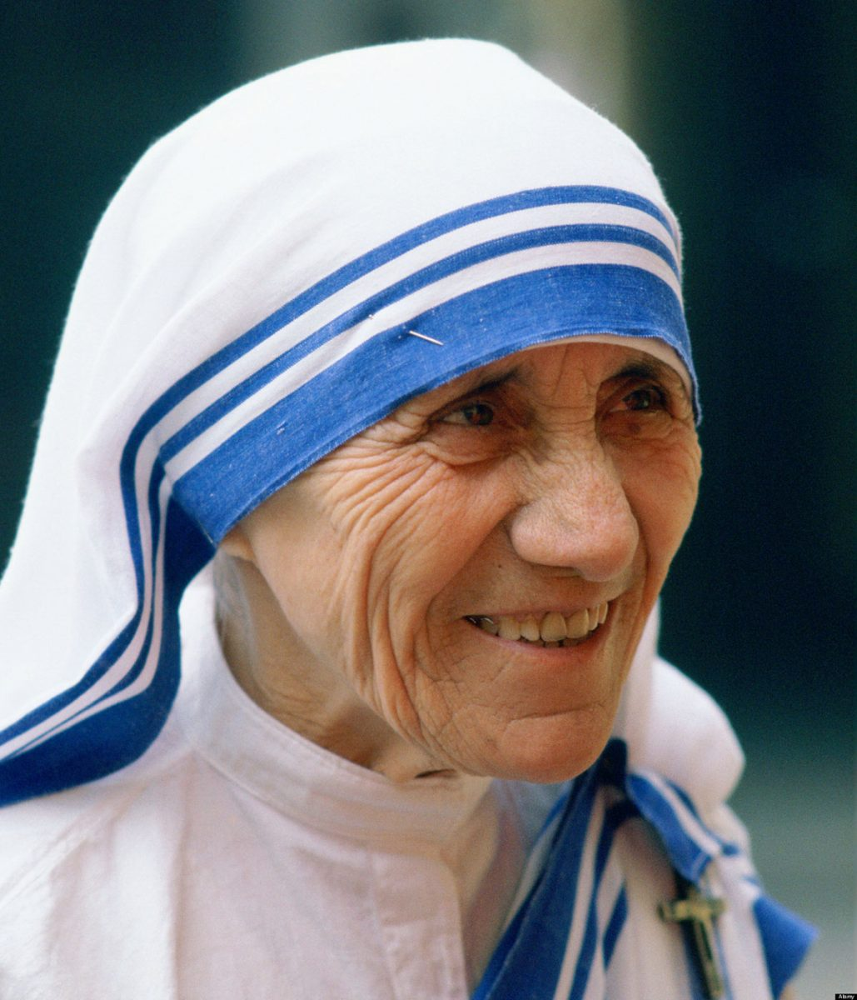

„Hoće li tko za mnom, neka se odreče samoga sebe, neka uzme svoj križ i neka ide za mnom.” (Mt 16,24)

Majka Terezija rođena je 1910. u Skopju kao Agneza Gonxha Bojaxhiu. S 18 godina odlazi u Irsku, a potom u Indiju, gdje postaje redovnica i učiteljica. Ključni trenutak dogodio se 1946. godine kada prima "poziv unutar poziva" – snažnu želju da služi Isusu kroz pomoć najsiromašnijima.
Nakon izlaska iz samostana, odjevena u prepoznatljiv bijeli sari, počinje brinuti o bolesnima i gladnima u Kalkuti. Godine 1950. osniva Misionarke ljubavi, red koji se brzo proširio cijelim svijetom. Za svoj nesebičan rad 1979. godine dobila je Nobelovu nagradu za mir.
Unatoč svjetskoj slavi, vodila je teške unutarnje duhovne borbe, osjećajući Božju odsutnost, što ju je samo dodatno sjedinilo s Njegovom patnjom. Preminula je 5. rujna 1997. u Kalkuti. Blaženom je proglašena 2003. godine. Svetom ju je proglasio papa Franjo 2016. godine.